13. 注释#
关键要点
细胞注释是根据已知或未知的细胞表型，对细胞群进行标注的过程，这对于理解你数据的细胞组成至关重要。
手动注释依赖于已知的标记基因和聚类，但可能比较主观，且耗费人力。
自动注释方法（如 CellTypist 和 scArches）提供了更快、更可扩展的替代方案，但其准确性取决于参考数据的质量，以及参考数据与查询数据集之间的相似程度。
环境设置
安装 conda:
在创建环境之前，请确保 conda 已安装在您的系统中。
保存 yml 内容:
将 yml 选项卡中的内容复制到名为
environment.yml的文件中。
创建环境:
打开终端或命令提示符。
运行以下命令：
conda env create -f environment.yml
激活环境:
创建好环境后，使用以下命令激活它：
conda activate <environment_name>
替换
<environment_name>，名称就是在environment.yml文件中指定的那个。在 yml 文件里，它看起来像这样：name: <environment_name>
验证安装:
通过运行以下命令，检查环境是否创建成功：
conda env list
name: annotation
channels:
- conda-forge
- bioconda
dependencies:
- conda-forge::python=3.12.9
- conda-forge::ipykernel=6.29.5
- conda-forge::scanpy=1.12.0
- conda-forge::leidenalg=0.10.2
- conda-forge::umap-learn=0.5.7
- conda-forge::pynndescent=0.5.13
- conda-forge::scvi-tools=1.3.1
- conda-forge::anndata=0.11.4
- pip
- pip:
- scarches==0.6.1
- celltypist==1.6.3
- lamindb==2.3.1
- pandas==2.2.3
获取数据和笔记本
本书使用 lamindb，并通过 theislab/sc-best-practices 实例 来存储、共享和加载数据集与笔记本。感谢 Lamin Labs 提供免费托管服务。
安装 lamindb
安装 lamindb Python 软件包：
pip install lamindb
可选择创建 lamin 账户
按照以下 说明 注册并登录。
验证你的设置
运行
lamin connect命令：
import lamindb as ln ln.Artifact.connect("theislab/sc-best-practices").df()
你现在应该看到最多100个存储的数据集。
访问数据集（Artifact）
在 Artifacts 页面 搜索该数据集。
加载一个 Artifact 及其对应的对象：
import lamindb as ln af = ln.Artifact.connect("theislab/sc-best-practices").get(key="key_of_dataset", is_latest=True) obj = af.load()
该对象现在已可在内存中访问，并可用于分析。请调整
ln.Artifact.connect("theislab/sc-best-practices").get("SOMEIDXXXX")后缀以获取相应的版本。访问笔记本（Transform）
在 Transforms 页面 搜索该笔记本。
加载笔记本：
lamin load <notebook url>
这会把笔记本下载到当前工作目录。与
Artifacts类似，你可以调整后缀 ID 来获取旧版本。
13.1. 动机#
为了更好地理解你的数据并利用已有知识，弄清数据中每个细胞的“细胞身份”非常重要。根据已知（有时是未知）的细胞表型，对数据中的细胞群进行标注的过程，称为“细胞注释”。虽然可以从多种角度对细胞进行注释（例如按批次、疾病、性别等），但本笔记本将聚焦于“细胞类型”的注释。
细胞类型是一种在不同数据集间都稳健、可由特定标记基因或蛋白质识别、并与某种独特生物学功能相关联的细胞表型。一个经典的例子是浆 B 细胞——一种分泌抗体的白细胞，可通过其特征性标记物加以识别。
然而，与任何分类一样，类别的大小及彼此之间的边界在一定程度上是主观的，并可能随时间变化，例如新技术使我们能以更高分辨率观察细胞，或者某些原本被认为不具生物学意义的“亚表型”被发现具有重要的生物学含义（例如可参见 [Kadur Lakshminarasimha Murthy et al., 2022]）。因此，细胞类型往往被进一步划分为“子类型”或“细胞状态”（例如激活态与静息态）；一些研究人员则使用“细胞身份”一词，以避免这种有时较为任意的区分。为了更详细地讨论这一话题，我们推荐 Wagner 等人的综述 [Wagner et al., 2016] 以及 Zeng 最近发表的综述 [Zeng, 2022].
类似地，多种细胞类型可以是同一个连续谱的组成部分，其中一种细胞类型可能过渡或分化为另一种。例如在造血过程中，细胞从干细胞分化为某种特定的免疫细胞类型。尽管人们常常在这一分化的早期与晚期阶段之间划出硬性边界，但这些细胞的状态，其实可以用“分化程度较低与较高的细胞表型之间的分化坐标”来更准确地描述。
对细胞进行注释有多种方法。下面我们将概述最常用的几种。由于我们处理的是转录组数据，这些方法归根结底都基于特定基因或基因集的表达，或细胞之间总体的转录组相似性。
13.2. 环境设置#
import shutil
import sys
from pathlib import Path
import celltypist
import lamindb as ln
import matplotlib.pyplot as plt
import numpy as np
import pandas as pd
import pandas.core.indexes.base as pandas_indexes_base
import scanpy as sc
import scarches as sca
import seaborn as sns
from celltypist import models
from scipy.sparse import csr_matrix
ln.connect("theislab/sc-best-practices")
ln.track("BnpvfJLWjHuE")
我们将继续使用我们先前处理过的 scRNA-seq 数据集，现在将对此进行注释。
设置图形参数：
sc.set_figure_params(figsize=(5, 5))
13.3. 加载数据#
让我们读入本教程将使用的玩具数据集。它包含书中其他部分也用到的数据中的单个样本（“site4-donor8”）。此外，未通过 QC 的细胞已经被移除。
af = ln.Artifact.get(key="cellular_structure/s4d8_clustered.h5ad", is_latest=True)
adata = af.load(is_run_input=False)
... synchronizing s4d8_clustered.h5ad: 100.0%
13.4. 手动注释#
进行细胞类型注释的经典（也是最古老）方式，是基于单个或一小组 标记基因 （已知与某种特定细胞类型相关）。这种方法可以追溯到“前 scRNA-seq 时代”，当时单细胞数据是低维的（例如基因 panel 不超过 30–40 个基因的 FACS 数据）。然而，当某种特定细胞类型不存在唯一的标记物时，这种方法很快会变得困难、也不那么客观，往往需要借助标记物的组合或表达阈值才能进行恰当的注释。一套稳健的标记基因，以及先验知识或注释经验，会在这里有所帮助，但这种方法也伴随着决策不明确、带有主观性的风险。
对于手动注释，通常会在注释之前先对数据进行聚类，这样我们就可以对细胞群（而非逐个细胞）进行注释。这不仅更省力，也对噪声更稳健：由于单细胞数据固有的稀疏性，某个单细胞即便表达了某个标记物，也可能没有它的计数。聚类能够检测出整体基因表达高度相似的细胞，因此可以弥补单细胞层面的漏检（drop-out）。
最后，进行基于标记基因的注释有两种切入角度。一种做法是：从一张涵盖你预期会在数据中出现的所有细胞类型的标记基因表出发，检查这些基因在哪些聚类中表达。另一种做法是：检查在你所定义的聚类中哪些基因高表达，再看它们是否与已知的细胞类型或状态相关。必要时，可以在这两种做法之间来回切换。下面我们将给出两者的示例。
13.4.1. 从标记到聚类注释#
首先，我们列出一组基于文献的骨髓细胞类型标记物：来自此前研究特定细胞类型及亚型、并报告了这些细胞类型标记基因的论文。请注意，蛋白质层面的标记物（例如用于 FACS 的）有时在转录组数据中效果不佳；因此，使用来自基于 RNA 的论文的标记物，往往更有可能奏效。此外，某个数据集中的标记物有时在其他数据集中并不同样有效。因此，理想情况下，标记物集合应在多个数据集上得到验证。与专家合作往往很有帮助：作为生物信息学家，不妨与一位对相关组织、生物学、预期细胞类型和标记物等有更深入了解的生物学家合作。
# keys: cell types or populations, values: lists of marker genes
marker_genes = {
"CD14+ Mono": ["FCN1", "CD14"],
"CD16+ Mono": ["TCF7L2", "FCGR3A", "LYN"],
"ID2-hi myeloid prog": [
"CD14",
"ID2",
"VCAN",
"S100A9",
"CLEC12A",
"KLF4",
"PLAUR",
],
"cDC1": ["CLEC9A", "CADM1"],
"cDC2": [
"CST3",
"COTL1",
"LYZ",
"DMXL2",
"CLEC10A",
"FCER1A",
], # Note: DMXL2 should be negative
"Normoblast": ["SLC4A1", "SLC25A37", "HBB", "HBA2", "HBA1", "TFRC"],
"Erythroblast": ["MKI67", "HBA1", "HBB"],
"Proerythroblast": [
"CDK6",
"SYNGR1",
"HBM",
"GYPA",
], # Note HBM and GYPA are negative markers
"NK": ["GNLY", "NKG7", "CD247", "GRIK4", "FCER1G", "TYROBP", "KLRG1", "FCGR3A"],
"ILC": ["ID2", "PLCG2", "GNLY", "SYNE1"],
"Lymph prog": [
"VPREB1",
"MME",
"EBF1",
"SSBP2",
"BACH2",
"CD79B",
"IGHM",
"PAX5",
"PRKCE",
"DNTT",
"IGLL1",
],
"Naive CD20+ B": ["MS4A1", "IL4R", "IGHD", "FCRL1", "IGHM"],
"B1 B": [
"MS4A1",
"SSPN",
"ITGB1",
"EPHA4",
"COL4A4",
"PRDM1",
"IRF4",
"CD38",
"XBP1",
"PAX5",
"BCL11A",
"BLK",
"IGHD",
"IGHM",
"ZNF215",
], # Note IGHD and IGHM are negative markers
"Transitional B": ["MME", "CD38", "CD24", "ACSM3", "MSI2"],
"Plasma cells": ["MZB1", "HSP90B1", "FNDC3B", "PRDM1", "IGKC", "JCHAIN"],
"Plasmablast": ["XBP1", "RF4", "PRDM1", "PAX5"], # Note PAX5 is a negative marker
"CD4+ T activated": ["CD4", "IL7R", "TRBC2", "ITGB1"],
"CD4+ T naive": ["CD4", "IL7R", "TRBC2", "CCR7"],
"CD8+ T": ["CD8A", "CD8B", "GZMK", "GZMA", "CCL5", "GZMB", "GZMH", "GZMA"],
"T activation": ["CD69", "CD38"], # CD69 much better marker!
"T naive": ["LEF1", "CCR7", "TCF7"],
"pDC": ["GZMB", "IL3RA", "COBLL1", "TCF4"],
"G/M prog": ["MPO", "BCL2", "KCNQ5", "CSF3R"],
"HSC": ["NRIP1", "MECOM", "PROM1", "NKAIN2", "CD34"],
"MK/E prog": [
"ZNF385D",
"ITGA2B",
"RYR3",
"PLCB1",
], # Note PLCB1 is a negative marker
}
负标记
负标记是指在某种特定细胞类型中不表达的基因，用于排除或区分该细胞类型；而正标记则是会主动表达、用于识别该细胞类型的基因。
将其取子集，只保留在我们数据中检测到的标记物。我们会遍历所有细胞类型，只保留能在 adata 对象中找到的、作为该细胞类型标记物的基因。这样可以避免在开始绘图时出错。
marker_genes_in_data = {}
for ct, markers in marker_genes.items():
markers_found = []
for marker in markers:
if marker in adata.var.index:
markers_found.append(marker)
marker_genes_in_data[ct] = markers_found
为了查看这些标记物在何处表达，我们可以对数据进行二维可视化，例如 UMAP。我们在这里基于 scran 归一化后的计数数据、只使用高偏差基因来计算这一嵌入。请注意，在生成 UMAP 之前，我们先对归一化计数做一次 PCA，以降低数据的维度。
首先，我们把原始计数存入 .layers['counts']，以便日后需要时仍能访问它们。随后，我们把 adata.X 设为 scran 归一化、经对数变换后的计数。
adata.layers["counts"] = adata.X
adata.X = adata.layers["scran_normalization"]
我们进一步设定 adata.var.highly_variable 设为高偏差基因。scanpy 在下游计算（例如下面的 PCA）中会使用这一 var 列。
adata.var["highly_variable"] = adata.var["highly_deviant"]
现在执行 PCA。我们使用高偏差基因（上面设为“高变”）来降低噪声、增强数据中的信号，并将主成分数设为默认的 n=50。对于单个样本的数据来说，50 偏高，但这能确保我们不会忽略数据中重要的变异。
sc.tl.pca(adata, n_comps=50, use_highly_variable=True)
基于这些 PC 计算邻域图：
sc.pp.neighbors(adata)
并使用该邻域图计算数据的二维 UMAP 嵌入：
sc.tl.umap(adata)
现在，用计算好的 UMAP 展示这些标记物的表达。本例中我们只关注 B 细胞/浆细胞亚型。注意上面的标记字典中有三个负标记：B1 B 细胞的 IGHD 和 IGHM，以及浆母细胞的 PAX5，这意味着预计这些细胞类型不表达或仅低表达这些标记物。
让我们列出我们要显示标记的 B 细胞子类型 :
B_plasma_cts = [
"Naive CD20+ B",
"B1 B",
"Transitional B",
"Plasma cells",
"Plasmablast",
]
现在为每个B细胞子类型绘制一个UMAP。请注意，我们只能绘制我们的数据中存在的标记。
for ct in B_plasma_cts:
print(f"{ct.upper()}:") # print cell subtype name
sc.pl.umap(
adata,
color=marker_genes_in_data[ct],
vmin=0,
vmax="p99", # set vmax to the 99th percentile of the gene count instead of the maximum, to prevent outliers from making expression in other cells invisible. Note that this can cause problems for extremely lowly expressed genes.
sort_order=False, # do not plot highest expression on top, to not get a biased view of the mean expression among cells
frameon=False,
cmap="Reds", # or choose another color map e.g. from here: https://matplotlib.org/stable/tutorials/colors/colormaps.html
)
print("\n\n\n") # print white space for legibility
NAIVE CD20+ B:
{kind=link}
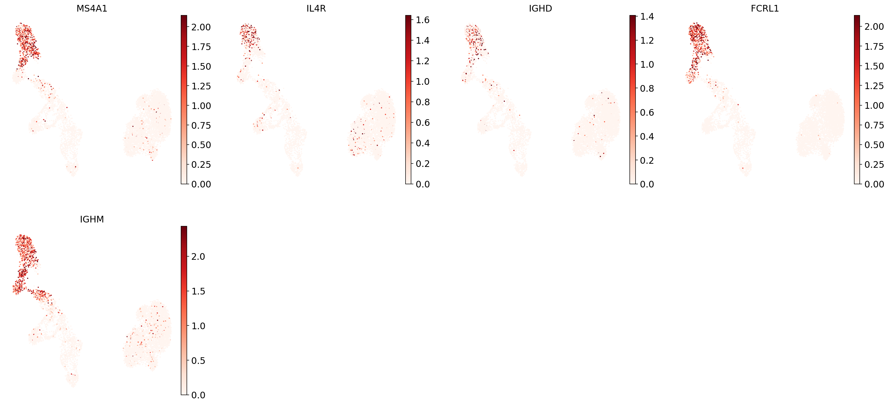
B1 B:
{kind=link}
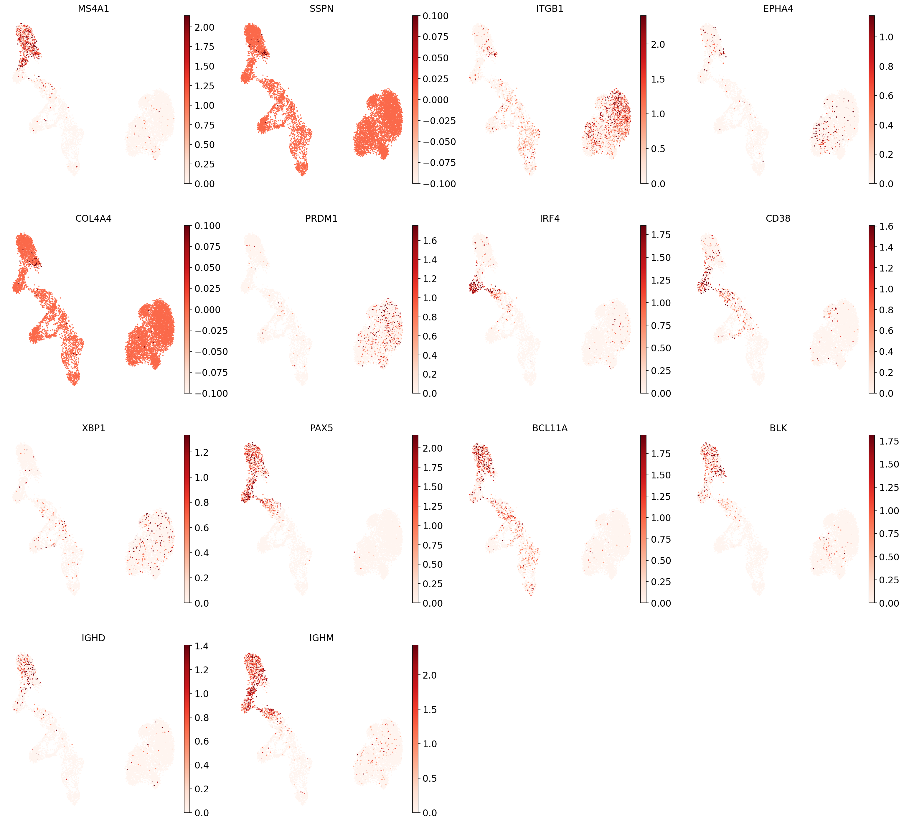
TRANSITIONAL B:
{kind=link}
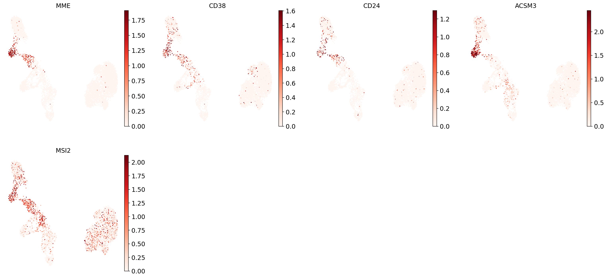
PLASMA CELLS:
{kind=link}
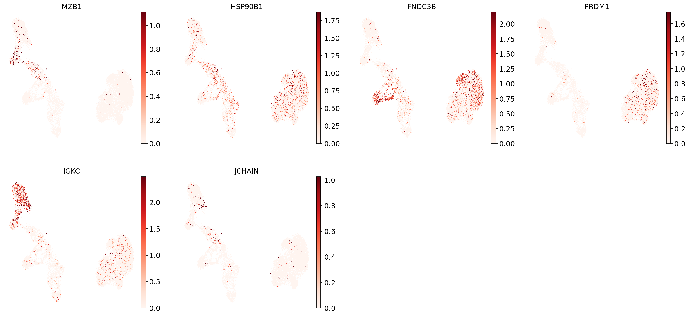
PLASMABLAST:
{kind=link}
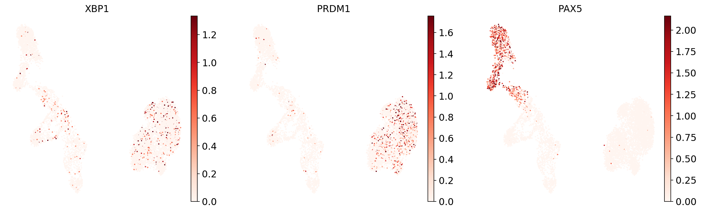
即使是针对单细胞类型的标记物，也常常在数据的不同子集中表达，也就是说，单个标记物往往并非只在某一种细胞类型中表达。相反，正是这些子集的交集才会告诉你，你感兴趣的细胞类型究竟在哪里。
值得注意的是，标记物往往表达稀疏，即通常只有某种细胞类型中的一部分细胞才检测到该标记物。这是由 scRNA-seq 数据的本质决定的：我们只对细胞中 RNA 分子总量的一小部分进行测序，由于这种亚采样，即便某些基因在细胞中表达了，我们有时也采不到它们的转录本。因此，我们不会基于诸如某组标记物的最低表达阈值来对单细胞进行注释。相反，我们先通过聚类把数据细分为相似细胞的群组（即对数据进行“划分”），从而弥补单个基因“缺失的转录本”，转而基于整体的转录组相似性来分组。随后，我们就可以根据这些聚类的整体标记物表达模式来进行注释。
现在让我们对数据进行聚类。我们将使用 Leiden 算法 [Traag et al., 2019] （如聚类一章所述），把数据划分成由相似细胞构成的若干子集：
sc.tl.leiden(adata, resolution=1, key_added="leiden_1")
sc.pl.umap(adata, color="leiden_1")
{kind=link}
如果你希望划分得更细，可以通过修改聚类的分辨率参数，把分辨率调到更高的级别：
sc.tl.leiden(adata, resolution=2, key_added="leiden_2")
也可以在UMAP中加入聚类编号。
sc.pl.umap(adata, color="leiden_2", legend_loc="on data")
{kind=link}
这种聚类要精细得多，在某些情况下能帮助你更细致地注释数据。你可以调节分辨率参数，找到最能捕捉你所观察到的标记物表达模式的设置。就我们而言，我们将沿用原来的分辨率：
sc.pl.umap(adata, color="leiden_1", legend_loc="on data")
{kind=link}
向上滚动，你会看到第 3 号聚类一致地表达 Naive CD20+ B 细胞的标记物，而第 6 号聚类则一致地表达过渡态 B 细胞的标记物。
我们也可以用点图（dotplot）来可视化这一点：
B_plasma_markers = {
ct: [m for m in ct_markers if m in adata.var.index]
for ct, ct_markers in marker_genes.items()
if ct in B_plasma_cts
}
sc.pl.dotplot(
adata,
groupby="leiden_1",
var_names=B_plasma_markers,
standard_scale="var", # standard scale: normalize each gene to range from 0 to 1
)
{kind=link}
结合对上面这些 UMAP 和点图的目视检查，我们现在可以开始对各聚类进行注释了：
cl_annotation = {
"3": "Naive CD20+ B",
"6": "Transitional B",
}
你可能会注意到，B1 B 细胞的注释比较困难：没有任何一个聚类表达全部 B1 B 标记物，而多个聚类各自表达其中的一部分。我们经常看到，对某个数据集有效的标记物，对其他数据集未必同样有效。这可能源于测序深度的差异，也可能源于数据集或样本之间的其他变异来源。
让我们把目前为止的注释可视化：
adata.obs["manual_celltype_annotation"] = adata.obs.leiden_1.map(cl_annotation)
sc.pl.umap(adata, color=["manual_celltype_annotation"])
... storing 'manual_celltype_annotation' as categorical
{kind=link}
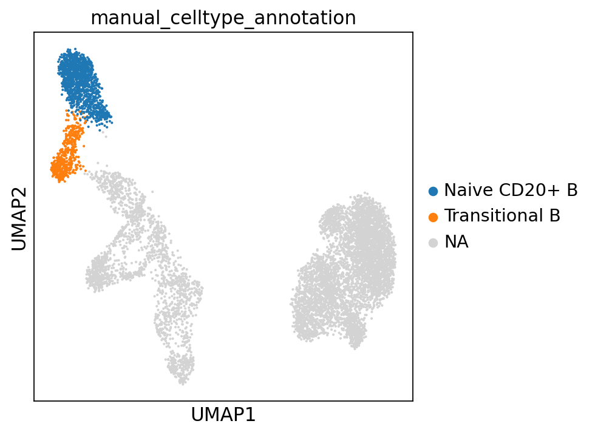
13.4.2. 从聚类的差异表达基因到聚类注释#
反过来，我们也可以为每个聚类计算标记基因，然后查找这些标记基因是否能与任何已知生物学（例如细胞类型和/或状态）建立联系。对于聚类的标记基因计算，人们认为像 Wilcoxon 秩和检验这样的简单方法表现最佳 [Pullin and McCarthy, 2022]。重要的是，由于聚类的定义基于与这些统计测试所用的相同数据，这些测试的p值将如本文所述被夸大。 [Zhang et al., 2019].
让我们计算每个聚类相对于 adata 中其余细胞的差异表达基因：
sc.tl.rank_genes_groups(
adata, groupby="leiden_1", method="wilcoxon", key_added="dea_leiden_1"
)
我们可以用一张标准的 scanpy 点图，可视化每个聚类中表达差异最显著的若干基因：
sc.tl.dendrogram(
adata,
groupby="leiden_1",
)
sc.pl.rank_genes_groups_dotplot(
adata, groupby="leiden_1", standard_scale="var", n_genes=5, key="dea_leiden_1"
)
{kind=link}
如上所示，许多差异表达基因在多个聚类中都高表达。我们可以对差异表达基因进行过滤，以筛选出更具聚类特异性的差异表达基因：
sc.tl.filter_rank_genes_groups(
adata,
min_in_group_fraction=0.2,
max_out_group_fraction=0.2,
key="dea_leiden_1",
key_added="dea_leiden_1_filtered",
)
可视化过滤后的基因：
sc.pl.rank_genes_groups_dotplot(
adata,
groupby="leiden_1",
standard_scale="var",
n_genes=5,
key="dea_leiden_1_filtered",
)
{kind=link}
我们来看看第 9 号聚类，它似乎拥有一组相对独特的标记物，包括 CD247、MOM2、KLRD1、PRF1 和 KLRF1。稍作检索就能知道，例如 KLRD1 是 NK 细胞的标记物 [Isola et al., 2021]。在 UMAP 中，我们可以看到这些基因在整个第 9 号聚类中都有表达：
sc.pl.umap(
adata,
color=["CD247", "MYOM2", "KLRD1", "PRF1", "KLRF1", "leiden_1"],
vmax="p99",
legend_loc="on data",
frameon=False,
cmap="Reds",
)
{kind=link}
然而，基于标记物的注释，可能对你所选的聚类分辨率、你所拥有标记物集合的稳健性和独特性，以及你对数据中预期细胞类型的了解都很敏感。因此，聚类注释不一定是确定无疑的，应当谨慎解读。
出于这个原因，该领域正在部分地从手动聚类注释转向自动注释算法。本教程的其余部分将聚焦于这些方案。
在我们继续前进之前，将最后一点的注释信息存储在我们的数据中:
cl_annotation["8"] = "NK cells (?)"
adata.obs["manual_celltype_annotation"] = adata.obs.leiden_1.map(cl_annotation)
13.5. 自动注释#
13.5.1. 一般性评论#
接下来要讨论的其余方法，都是用于自动（而非手动）注释数据的方法。自动化方法基于不同的原理，有时需要预先定义的标记物集合，有时则在已有的完整 scRNA-seq 数据集上训练。如下文所述，所得到的注释质量参差不齐。因此，重要的是把这些方法视为注释过程的起点，而非终点。另请参阅若干综述 [Pasquini et al., 2021], [Abdelaal et al., 2019] 更详细地讨论自动注释方法。
自动生成的注释，其质量可能差异很大。更具体地说，注释的质量取决于：
所选分类器的类型：以往的基准研究表明，不同类型的分类器往往表现相当，基于神经网络的方法通常并不优于支持向量机或线性回归模型等通用模型[Abdelaal et al., 2019], [Pasquini et al., 2021], [Huang and Zhang, 2021].
分类器所训练的数据的质量。如果训练数据没有得到良好的注释，或注释的分辨率很低，那么分类器也会同样如此。类似地，如果训练数据和/或其注释含有噪声，分类器的表现可能就不好。
你自己的数据与分类器训练所用数据的相似程度。例如，如果分类器是在 drop-seq 单细胞数据集上训练的，而你的数据是 10X 单核而非单细胞 drop-seq，这可能会使注释质量变差。相比在单一数据集上训练的分类器，在涵盖多样数据集的跨数据集图谱上训练的分类器，往往能给出更稳健、质量更高的注释。一个例子是在人类肺细胞图谱（Human Lung Cell Atlas）上训练的 CellTypist（一种自动注释方法，下文会更详细讨论）分类器 [Sikkema et al., 2023] 包括14个不同的肺部数据集。这个模型在新的肺数据上可能比在单一肺数据集上训练过的模型表现得更好。
上述各点突出了使用分类器可能存在的缺点——这取决于训练数据和模型类型。尽管如此，使用预训练分类器来注释数据也有几个重要优点。第一，它是一种快速、简便的数据注释方式：注释既不需要下载也不需要预处理训练数据，有时只需把你的数据上传到一个在线网页即可。第二，这些方法不像手动注释那样依赖于把数据划分成聚类。第三，预训练分类器使你能够直接利用以往研究中的知识和信息，例如一份高质量的注释。最后，使用这类分类器有助于在整个领域统一细胞类型的定义，从而为在这些定义上达成全领域共识扫清道路。
最后，由于这些分类器往往不如手动的、基于标记物的注释那样透明，一个能够量化注释不确定性的良好不确定性度量，将提升该方法的质量和可用性。我们将在后文更详细地讨论这一点。
13.5.2. 基于标记基因的分类器#
有一类自动细胞类型注释方法依赖于一组预先定义好的标记基因。细胞会根据它们对这些标记基因的表达水平，被划分到相应的细胞类型。这类方法的例子有 Garnett [Pliner et al., 2019] 和 CellAssign [Zhang et al., 2019]。这些模型所依据的标记基因集越稳健、越具普适性，模型表现就越好。然而，与其他模型一样，它们也很可能受到“训练数据与待标注数据之间批次效应差异”的影响。与基于更大基因集的模型（见下文）相比，这类方法的一个优点是更加透明：我们清楚分类是基于哪些基因做出的。
我们不会在本笔记本中展示基于标记物的分类器的示例，但如果你感兴趣，鼓励你自行探索这些方法。
13.5.3. 基于更大基因集的分类器#
值得注意的是，迄今讨论的方法只使用了数据中检测到的一小部分基因：通常每种细胞类型只用一组 1 到约 10 个标记基因。另一种思路是使用以更大基因集（数千个甚至更多）作为输入的分类器，从而更充分地利用 scRNA-seq 数据的广度。这类分类器是在此前已注释的数据集或图谱上训练的。例子包括 CellTypist [Conde et al., 2022] (另见 https://www.celltypist.org,其中数据可以上传到一个门户，以获取自动细胞注释)和 Clustifyr [Fu et al., 2020].
让我们在自己的数据上试用 CellTypist。根据 CellTypist 教程（https://www.celltypist.org/tutorials）我们知道，需要先对数据做准备：把计数归一化到每个细胞 10,000 个计数，然后再做 log1p 变换：
adata_celltypist = adata.copy() # make a copy of our adata
adata_celltypist.X = adata.layers["counts"] # set adata.X to raw counts
sc.pp.normalize_total(
adata_celltypist, target_sum=10**4
) # normalize to 10,000 counts per cell
sc.pp.log1p(adata_celltypist) # log-transform
# make .X dense instead of sparse, for compatibility with celltypist:
adata_celltypist.X = adata_celltypist.X.toarray()
现在我们来下载用于免疫细胞的 CellTypist 模型：
models.download_models(
force_update=True, model=["Immune_All_Low.pkl", "Immune_All_High.pkl"]
)
让我们试试这两个 Immune_All_Low 和 Immune_All_High 模型（它们分别以较细（low）和较粗（high）的注释级别来注释免疫细胞类型）：
model_low = models.Model.load(model="Immune_All_Low.pkl")
model_high = models.Model.load(model="Immune_All_High.pkl")
对于其中每一个模型，我们都可以查看它包含了哪些细胞类型，从而判断是否涵盖了骨髓中的细胞类型：
model_high.cell_types
array(['B cells', 'B-cell lineage', 'Cycling cells', 'DC', 'DC precursor',
'Double-negative thymocytes', 'Double-positive thymocytes', 'ETP',
'Early MK', 'Endothelial cells', 'Epithelial cells',
'Erythrocytes', 'Erythroid', 'Fibroblasts', 'Granulocytes',
'HSC/MPP', 'ILC', 'ILC precursor', 'MNP', 'Macrophages',
'Mast cells', 'Megakaryocyte precursor',
'Megakaryocytes/platelets', 'Mono-mac', 'Monocyte precursor',
'Monocytes', 'Myelocytes', 'Plasma cells', 'Promyelocytes',
'T cells', 'pDC', 'pDC precursor'], dtype=object)
model_low.cell_types
array(['Age-associated B cells', 'Alveolar macrophages', 'B cells',
'CD16+ NK cells', 'CD16- NK cells', 'CD8a/a', 'CD8a/b(entry)',
'CMP', 'CRTAM+ gamma-delta T cells', 'Classical monocytes',
'Cycling B cells', 'Cycling DCs', 'Cycling NK cells',
'Cycling T cells', 'Cycling gamma-delta T cells',
'Cycling monocytes', 'DC', 'DC precursor', 'DC1', 'DC2', 'DC3',
'Double-negative thymocytes', 'Double-positive thymocytes', 'ELP',
'ETP', 'Early MK', 'Early erythroid', 'Early lymphoid/T lymphoid',
'Endothelial cells', 'Epithelial cells', 'Erythrocytes',
'Erythrophagocytic macrophages', 'Fibroblasts',
'Follicular B cells', 'Follicular helper T cells', 'GMP',
'Germinal center B cells', 'Granulocytes', 'HSC/MPP',
'Hofbauer cells', 'ILC', 'ILC precursor', 'ILC1', 'ILC2', 'ILC3',
'Intermediate macrophages', 'Intestinal macrophages',
'Kidney-resident macrophages', 'Kupffer cells',
'Large pre-B cells', 'Late erythroid', 'MAIT cells', 'MEMP', 'MNP',
'Macrophages', 'Mast cells', 'Megakaryocyte precursor',
'Megakaryocyte-erythroid-mast cell progenitor',
'Megakaryocytes/platelets', 'Memory B cells',
'Memory CD4+ cytotoxic T cells', 'Mid erythroid', 'Migratory DCs',
'Mono-mac', 'Monocyte precursor', 'Monocytes', 'Myelocytes',
'NK cells', 'NKT cells', 'Naive B cells',
'Neutrophil-myeloid progenitor', 'Neutrophils',
'Non-classical monocytes', 'Plasma cells', 'Plasmablasts',
'Pre-pro-B cells', 'Pro-B cells',
'Proliferative germinal center B cells', 'Promyelocytes',
'Regulatory T cells', 'Small pre-B cells', 'T(agonist)',
'Tcm/Naive cytotoxic T cells', 'Tcm/Naive helper T cells',
'Tem/Effector helper T cells', 'Tem/Effector helper T cells PD1+',
'Tem/Temra cytotoxic T cells', 'Tem/Trm cytotoxic T cells',
'Transitional B cells', 'Transitional DC', 'Transitional NK',
'Treg(diff)', 'Trm cytotoxic T cells', 'Type 1 helper T cells',
'Type 17 helper T cells', 'gamma-delta T cells', 'pDC',
'pDC precursor'], dtype=object)
看起来这些模型涵盖了许多不同的免疫细胞类型祖细胞！
现在我们来运行这些模型。先运行较粗粒度的那个：
predictions_high = celltypist.annotate(
adata_celltypist, model=model_high, majority_voting=True
)
🔬 Input data has 8874 cells and 12850 genes
🔗 Matching reference genes in the model
🧬 4237 features used for prediction
⚖️ Scaling input data
🖋️ Predicting labels
✅ Prediction done!
👀 Detected a neighborhood graph in the input object, will run over-clustering on the basis of it
⛓️ Over-clustering input data with resolution set to 10
🗳️ Majority voting the predictions
✅ Majority voting done!
将预测结果转换到 adata，以获得完整的输出……
predictions_high_adata = predictions_high.to_adata()
……然后把结果复制到我们原始的 AnnData 对象中：
adata.obs["celltypist_cell_label_coarse"] = predictions_high_adata.obs.loc[
adata.obs.index, "majority_voting"
]
adata.obs["celltypist_conf_score_coarse"] = predictions_high_adata.obs.loc[
adata.obs.index, "conf_score"
]
现在对更精细的注释做同样的处理：
predictions_low = celltypist.annotate(
adata_celltypist, model=model_low, majority_voting=True
)
🔬 Input data has 8874 cells and 12850 genes
🔗 Matching reference genes in the model
🧬 4237 features used for prediction
⚖️ Scaling input data
🖋️ Predicting labels
✅ Prediction done!
👀 Detected a neighborhood graph in the input object, will run over-clustering on the basis of it
⛓️ Over-clustering input data with resolution set to 10
🗳️ Majority voting the predictions
✅ Majority voting done!
predictions_low_adata = predictions_low.to_adata()
adata.obs["celltypist_cell_label_fine"] = predictions_low_adata.obs.loc[
adata.obs.index, "majority_voting"
]
adata.obs["celltypist_conf_score_fine"] = predictions_low_adata.obs.loc[
adata.obs.index, "conf_score"
]
现在来绘图：
sc.pl.umap(
adata,
color=["celltypist_cell_label_coarse", "celltypist_conf_score_coarse"],
frameon=False,
sort_order=False,
wspace=1,
)
... storing 'manual_celltype_annotation' as categorical
{kind=link}
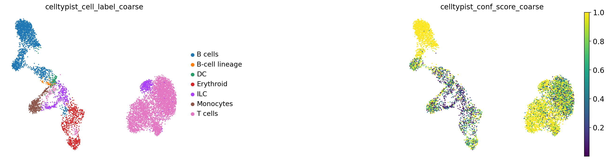
sc.pl.umap(
adata,
color=["celltypist_cell_label_fine", "celltypist_conf_score_fine"],
frameon=False,
sort_order=False,
wspace=1,
)
{kind=link}
要对这些注释的质量有个直观感受，一种方法是看观测到的细胞类型相似性是否与我们的预期相符：
sc.tl.dendrogram(
adata,
groupby="celltypist_cell_label_fine",
)
sc.pl.dendrogram(adata, groupby="celltypist_cell_label_fine")
{kind=link}
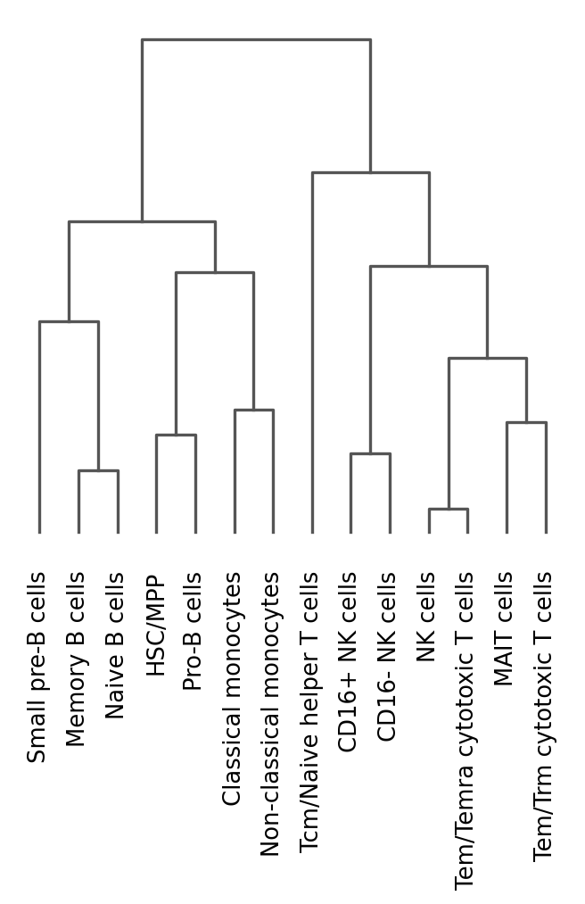
<Axes: >
这张树状图（dendrogram）告诉我们，这些细胞彼此聚得很好（例如，B 细胞大体上聚在一起）。在直接采用自动注释之前，务必先手动核查它们！
用人工注释交叉核对自动注释
树状图（dendrogram）常常会揭示出意料之外的模式，例如某个特定的 B 细胞亚型未能与其他 B 细胞聚到一起。这种不一致往往意味着自动标注并不准确。
要诊断这些情况：
使用替代注释源或已知的标记基因验证聚类。
检查自动注释的置信度分数。“错位”聚类中的低分，是需要人工干预的强烈信号。
你也可以查看某个特定聚类的细分情况，做进一步排查：
pd.crosstab(adata.obs.leiden_1, adata.obs.celltypist_cell_label_fine).loc[
"8", :
].sort_values(ascending=False)
自动注释可能只与人工标签部分吻合，甚至在它自己的粗、细两种分类之间也可能不一致。
这凸显出：自动注释算法应当谨慎使用，应被视为数据注释的起点，而非最终注释。归根结底，已知标记基因的表达，仍然是细胞类型注释最被广泛认可的依据。
13.5.4. 通过映射到参考数据进行注释#
注释数据的最后一种方法，是把你的数据映射到一个已有的、带注释的单细胞参考数据上，然后利用由此得到的联合嵌入来进行标签转移。举例来说，这个参考可以是你之前手动注释过的单个样本，之后你想把这些注释迁移到数据集的其余部分；它也可以是一份已发表、且理想情况下经过精心整理的现有参考。在这种语境下，我们把“新数据”（即将要被映射和注释的数据）称为“查询（query）”。
目前已有多种方法可以执行这种“查询到参考的映射”（query-to-reference mapping），包括 scArches [Lotfollahi et al., 2022], Symphony [Kang et al., 2021]，以及 Azimuth（Seurat） [Hao et al., 2021]。所有这些方法都让你能够把一个新数据集映射到已有的参考上，既不需要重新整合参考中的数据，也不需要访问完整的参考数据。
由于查询到参考的映射，需要把新数据嵌入到参考数据的一个 现有的 低维表示中，而这个低维表示的维度和坐标轴，在从查询数据中学习之前就已基本确定。因此，学习并纳入查询数据中可能存在的、此前未见过的变异（既包括新的生物学变异，例如未见过的细胞类型或状态，也包括新的技术变异，即需要去除的、未见过的批次效应），对这些模型来说可能是一项挑战。结果是，查询数据与参考的整合未必总是最优的，批次效应也可能无法从联合的查询-参考嵌入中被完全去除。不过，由于细胞类型的标签转移并不一定需要完美的整合，而只需要相同的细胞类型在嵌入中彼此靠近，因此即便是不完美的映射，仍然能极大地帮助你注释数据。
scArches（我们将用它作为基于参考映射的标签转移的示例）以一个已有模型为基础，该模型基于变分自编码器（variational autoencoder），把参考数据嵌入到一个低维、且经过批次校正的空间中。随后它对该模型稍加扩展，使其能够把一个未见过的数据集映射到同一个“潜在空间”（latent space，即低维嵌入）中。这种模型扩展还能够学习并去除被映射数据集中存在的批次效应。
下面我们将展示如何使用 scArches 把数据映射到参考上，并利用这种映射，把标签从参考转移到新数据（即“查询”）。
警告
请注意，如果你没有 GPU，scArches 将无法运行，或者运行得非常慢。因此，你可能需要在计算聚类/服务器上运行笔记本的这一部分。
我们先来为“映射到参考”准备数据。scArches 这种方法能让我们把已有的参考模型适配到新数据上，它需要原始的、未归一化的计数。因此，我们会保留 counts 层，并从待映射的 adata 中移除所有其他层。我们还会把 .X 也设为这些原始计数。
adata_to_map = adata.copy()
for layer in list(adata_to_map.layers.keys()):
if layer != "counts":
del adata_to_map.layers[layer]
adata_to_map.X = adata_to_map.layers["counts"]
此外，很重要的一点是：我们必须使用与训练参考模型时相同的输入特征（即基因），并且把这些特征按相同的顺序排列。参考模型的特征信息与模型存储在一起。我们来加载这张特征表。
af = ln.Artifact.connect("theislab/sc-best-practices").get(
key="cellular_structure/annotation_reference_features.csv", is_latest=True
)
reference_model_features = af.load()
... synchronizing annotation_reference_features.csv: 100.0%
这张表同时包含基因名称和基因 ID。由于基因 ID 通常比基因名称在不同基因组注释版本之间更不容易变化，我们将用它来对数据取子集。因此，我们会把 adata 和参考模型特征的行名都设为 gene_ids。重要的是，我们必须确保同时保存基因名称以备后用：它们比基因 ID 更容易理解。
adata_to_map.var["gene_names"] = adata_to_map.var.index
adata_to_map.var.set_index("gene_id", inplace=True)
reference_model_features["gene_names"] = reference_model_features.index
reference_model_features.set_index("gene_ids", inplace=True)
现在，我们来检查一下查询数据中是否包含了所有需要的基因：
print("Total number of genes needed for mapping:", reference_model_features.shape[0])
Total number of genes needed for mapping: 4000
print(
"Number of genes found in query dataset:",
adata_to_map.var.index.isin(reference_model_features.index).sum(),
)
Number of genes found in query dataset: 2725
我们缺少了一些基因。由于这些基因似乎在我们的数据中未被检测到，我们将手动把它们补上，并把它们的计数设为 0。我们来为这些缺失的基因创建一个只含零值的 AnnData 对象（包括用于映射的原始 counts 层），随后再把它拼接到我们自己的 AnnData 对象上。
missing_genes = [
gene_id
for gene_id in reference_model_features.index
if gene_id not in adata_to_map.var.index
]
missing_gene_adata = sc.AnnData(
X=csr_matrix(np.zeros(shape=(adata.n_obs, len(missing_genes))), dtype="float32"),
obs=adata.obs.iloc[:, :1],
var=reference_model_features.loc[missing_genes, :],
)
missing_gene_adata.layers["counts"] = missing_gene_adata.X
把我们原始的 adata 与缺失基因的 adata 拼接起来。为了确保拼接不出错，我们会先把 PCA 矩阵从 varm 中移除。
if "PCs" in adata_to_map.varm.keys():
del adata_to_map.varm["PCs"]
adata_to_map_augmented = sc.concat(
[adata_to_map, missing_gene_adata],
axis=1,
join="outer",
index_unique=None,
merge="unique",
)
现在取子集，只保留模型所用的基因，并按正确的顺序排列：
adata_to_map_augmented = adata_to_map_augmented[
:, reference_model_features.index
].copy()
检查我们 adata 的基因名称是否与所需的基因顺序完全对应：
bool((adata_to_map_augmented.var.index == reference_model_features.index).all())
True
现在我们可以把基因索引重新设回基因名称，方便理解：
adata_to_map_augmented.var["gene_ids"] = adata_to_map_augmented.var.index
adata_to_map_augmented.var.set_index("gene_names", inplace=True)
最后，这个参考模型使用了 adata.obs['batch'] 作为我们的批次变量。因此，我们会检查整个样本的这一变量是否都被设为同一个值：
adata_to_map_augmented.obs.batch.unique()
['s4d8']
Categories (1, object): ['s4d8']
现在我们来谈谈参考模型。参考模型越好，标签转移的效果就越好。理想的做法是使用一个标注良好的参考，它整合了许多不同的数据集，并且与你的数据匹配得很好（同一器官、同一单细胞技术等）：这类模型在多种数据集和批次上训练过，因此预计对批次效应更稳健。然而，并非所有组织都已经有这样的参考。在本教程中，我们将使用一个在骨髓样本上训练的参考模型——这些骨髓样本正是全书一直在用的，但不包括我们将要映射的那个样本。该参考模型是一个 scvi 模型（用于数据整合），它会为输入数据生成一个低维、整合后的嵌入，另见 scvi 的论文 [Lopez et al., 2018]。请注意，这只是为本教程生成的一个玩具模型，不应在其他场景中使用。
我们先做一些兼容性方面的修补，因为这个模型是基于旧版本的 pandas 构建的。
sys.modules["pandas.core.indexes.numeric"] = pandas_indexes_base
pandas_indexes_base.Int64Index = pd.Index
pandas_indexes_base.Float64Index = pd.Index
现在，我们来加载模型，并把想要映射的 adata 传给它。
af = ln.Artifact.connect("theislab/sc-best-practices").get(
key="cellular_structure/annotation_reference_model.pt", is_latest=True
)
annotation_ref_model_path = af.cache()
model_dir = Path("./reference_model")
model_dir.mkdir(parents=True, exist_ok=True)
shutil.copy(annotation_ref_model_path, model_dir / "model.pt")
... synchronizing annotation_reference_model.pt: 100.0%
PosixPath('reference_model/model.pt')
scarches_model = sca.models.SCVI.load_query_data(
adata=adata_to_map_augmented,
reference_model=str(model_dir),
freeze_dropout=True,
)
INFO File reference_model/model.pt already downloaded
现在我们将更新这个参考模型，以便把我们自己的数据（即“查询”）嵌入到与参考相同的潜在空间中。这需要使用 scArches 在我们的查询数据上进行训练：
scarches_model.train(max_epochs=500, plan_kwargs={"weight_decay": 0.0})
INFO: GPU available: False, used: False
GPU available: False, used: False
INFO: TPU available: False, using: 0 TPU cores
TPU available: False, using: 0 TPU cores
INFO: 💡 Tip: For seamless cloud logging and experiment tracking, try installing [litlogger](https://pypi.org/project/litlogger/) to enable LitLogger, which logs metrics and artifacts automatically to the Lightning Experiments platform.
💡 Tip: For seamless cloud logging and experiment tracking, try installing [litlogger](https://pypi.org/project/litlogger/) to enable LitLogger, which logs metrics and artifacts automatically to the Lightning Experiments platform.
Epoch 500/500: 100%|██████████| 500/500 [54:55<00:00, 4.48s/it, v_num=1, train_loss_step=961, train_loss_epoch=1e+3]
INFO: `Trainer.fit` stopped: `max_epochs=500` reached.
`Trainer.fit` stopped: `max_epochs=500` reached.
Epoch 500/500: 100%|██████████| 500/500 [54:55<00:00, 6.59s/it, v_num=1, train_loss_step=961, train_loss_epoch=1e+3]
更新模型之后，我们就可以计算查询数据的（理想情况下经过批次校正的）潜在表示了：
adata.obsm["X_scVI"] = scarches_model.get_latent_representation()
现在我们可以把这个新计算出的低维嵌入，作为可视化和聚类的基础。我们用基于 scVI 的数据表示来计算新的 UMAP。
sc.pp.neighbors(adata, use_rep="X_scVI")
sc.tl.umap(adata)
为了判断基于映射得到的 UMAP 是否大体合理，我们来看几个标记物，并观察它们的表达是否集中在 UMAP 的特定区域：
sc.pl.umap(
adata,
color=["IGHD", "IGHM", "PRDM1"],
vmin=0,
vmax="p99", # set vmax to the 99th percentile of the gene count instead of the maximum, to prevent outliers from making expression in other cells invisible. Note that this can cause problems for extremely lowly expressed genes.
sort_order=False, # do not plot highest expression on top, to not get a biased view of the mean expression among cells
frameon=False,
cmap="Reds", # or choose another color map e.g. from here: https://matplotlib.org/stable/tutorials/colors/colormaps.html
)
{kind=link}
现在关键的一步是：我们可以把为查询数据推断出的潜在空间嵌入，与已有的参考嵌入结合起来。借助这个联合嵌入，我们不仅能够把两者放在一起做可视化和聚类，还可以进行从查询到参考的标签转移。
我们来加载参考的嵌入：现有的图谱（atlas）通常会把它公开提供。
af = ln.Artifact.get(
key="cellular_structure/annotation_reference_embedding.h5ad", is_latest=True
)
ref_emb = af.load(is_run_input=False)
... synchronizing annotation_reference_embedding.h5ad: 100.0%
我们会存一个变量，用来标明这些细胞来自参考。
ref_emb.obs["reference_or_query"] = "reference"
我们来看看这个参考对象里有什么：
ref_emb
AnnData object with n_obs × n_vars = 86332 × 10
obs: 'donor', 'batch', 'site', 'cell_type', 'reference_or_query'
uns: 'neighbors', 'umap'
obsm: 'X_umap'
obsp: 'connectivities', 'distances'
可以看到，它只有 10 个维度（位于 .X中），这些维度共同表示了参考细胞的潜在空间嵌入。我们为自己数据计算出的查询嵌入同样有 10 个维度。参考与查询的这 10 个维度是一致的，可以合并！
此外，它还带有细胞类型标签，存放在 .obs['cell_type']中。我们将用这些标签来注释我们自己的数据。
为了进行标签转移，我们会先用这个 10 维嵌入把参考数据和查询数据拼接起来。为此，我们会用查询数据创建一个与参考数据相同类型的 AnnData 对象（嵌入存放在 .X下），然后把两者拼接起来。这样，我们就可以对参考和查询进行联合分析，包括在两者之间进行标签转移。
adata_emb = sc.AnnData(X=adata.obsm["X_scVI"], obs=adata.obs)
adata_emb.obs["reference_or_query"] = "query"
我们会把细胞类型标签设置在 .obs["cell_type"] as None中，这样我们就能看到，如何根据周围的细胞来注释细胞类型。
adata_emb.obs["cell_type"] = None
emb_ref_query = sc.concat(
[ref_emb, adata_emb],
axis=0,
join="outer",
index_unique=None,
merge="unique",
)
我们用 UMAP 把这个联合嵌入可视化。
sc.pp.neighbors(emb_ref_query)
sc.tl.umap(emb_ref_query)
通过这个 UMAP，我们可以从视觉上初步判断参考和查询是否整合得很好：
sc.pl.umap(
emb_ref_query,
color=["reference_or_query"],
sort_order=False,
frameon=False,
)
... storing 'reference_or_query' as categorical
{kind=link}
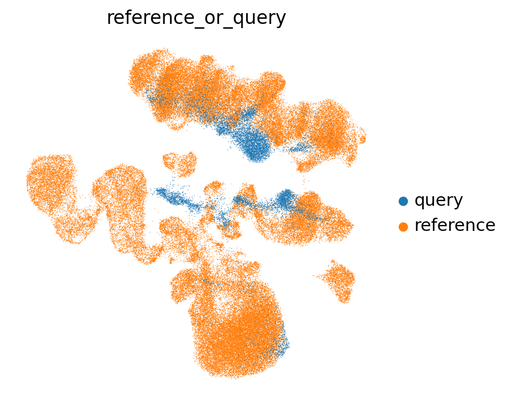
在这个 UMAP 中，查询和参考（部分地）混合在一起，这是个好迹象！当映射彻底失败时，你往往会在 UMAP 中看到查询和参考完全分离开来。
现在我们来看参考中的细胞类型注释。来自查询的所有细胞在这里都被设为 NA（因为它们还没有注释），并以黑色显示。
我们会把这张图放大一些，以便能看清图例：
sc.set_figure_params(figsize=(8, 8))
sc.pl.umap(
emb_ref_query,
color=["cell_type"],
sort_order=False,
frameon=False,
legend_loc="on data",
legend_fontsize=10,
na_color="black",
)
{kind=link}
正如你已经能从 UMAP 中看出的那样，我们可以通过观察某个细胞周围都是参考中的哪些细胞类型，来推测我们自己每个细胞（黑色）的细胞类型。这正是基于最近邻图的标签转移方法所做的事情：对于每个查询细胞，它会检查其相邻的参考细胞中最常见的是哪种细胞类型。来自同一种细胞类型的参考细胞所占比例越高，标签转移就越有把握。
下面我们来执行基于 KNN 的标签转移。
首先，我们建立标签转移模型：
knn_transformer = sca.utils.knn.weighted_knn_trainer(
train_adata=ref_emb,
train_adata_emb="X", # location of our joint embedding
n_neighbors=15,
)
Weighted KNN with n_neighbors = 15 ...
现在我们来执行标签转移：
labels, uncert = sca.utils.knn.weighted_knn_transfer(
query_adata=adata_emb,
query_adata_emb="X", # location of our embedding, query_adata.X in this case
label_keys="cell_type", # (start of) obs column name(s) for which to transfer labels
knn_model=knn_transformer,
ref_adata_obs=ref_emb.obs,
)
finished!
并把结果存储到我们的 adata 中：
adata_emb.obs["transf_cell_type"] = labels.loc[adata_emb.obs.index, "cell_type"]
adata_emb.obs["transf_cell_type_unc"] = uncert.loc[adata_emb.obs.index, "cell_type"]
我们把结果转移到查询的 adata 对象上——它同时还包含我们的 UMAP 和基因计数，这样我们就可以把这些信息放在一起做可视化。
adata.obs.loc[adata_emb.obs.index, "transf_cell_type"] = adata_emb.obs[
"transf_cell_type"
]
adata.obs.loc[adata_emb.obs.index, "transf_cell_type_unc"] = adata_emb.obs[
"transf_cell_type_unc"
]
adata.obs["transf_cell_type_unc"] = adata.obs["transf_cell_type_unc"].astype(
float
) # ensure uncertainty is float, for compatibility with downstream plotting functions
现在我们可以在先前为自己数据计算出的 UMAP 上，把转移过来的标签可视化：
我们再把图的尺寸调小一些：
sc.set_figure_params(figsize=(5, 5))
sc.pl.umap(adata, color="transf_cell_type", frameon=False)
... storing 'transf_cell_type' as categorical
{kind=link}
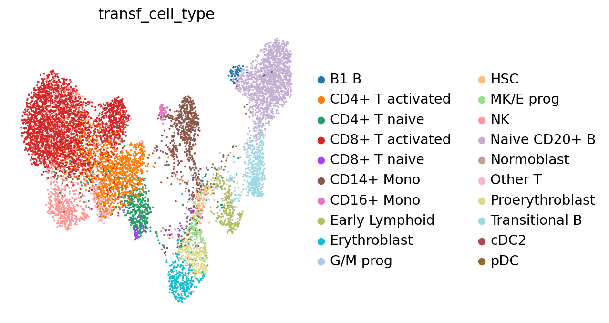
根据每个查询细胞的邻居，我们不仅可以推测这些细胞所属的细胞类型，还能为该标签生成一个确定性度量：如果一个细胞的邻居来自好几种不同的细胞类型，那么我们的推测就会非常不确定。这对于评估我们能在多大程度上“信任”转移过来的标签很有意义！我们来把不确定性分数可视化：
sc.pl.umap(adata, color="transf_cell_type_unc", frameon=False)
{kind=link}
我们来看看每种细胞类型标签的标签转移不确定性有多高。这能让我们初步了解，哪些注释更有争议、需要更多的人工核查。
fig, ax = plt.subplots(figsize=(8, 3))
ct_order = (
adata.obs.groupby("transf_cell_type")
.agg({"transf_cell_type_unc": "median"})
.sort_values(by="transf_cell_type_unc", ascending=False)
)
sns.boxplot(
adata.obs,
x="transf_cell_type",
y="transf_cell_type_unc",
color="grey",
ax=ax,
order=ct_order.index,
)
ax.tick_params(rotation=90, axis="x")
{kind=link}
你会注意到，例如祖细胞（progenitor cells）往往比其他细胞类型更难区分。我们注释中那个相当笼统的“Other T”类别也是如此。我们可以看到，pDC 这种已知在转录层面相当独特、因而更容易识别和标注的细胞类型，其不确定性分数从 0.0 一直分布到 0.5。
为了把这种不确定性信息纳入我们转移过来的标签，我们可以把不确定性分数高于（例如）0.2 的细胞设为“unknown（未知）”：
adata.obs["transf_cell_type_certain"] = adata.obs.transf_cell_type.tolist()
adata.obs.loc[adata.obs.transf_cell_type_unc > 0.2, "transf_cell_type_certain"] = (
"Unknown"
)
我们来看看经过这次过滤后注释是什么样子。注意图例和 UMAP 中代表 Unknown（未知）的颜色。
sc.pl.umap(adata, color="transf_cell_type_certain", frameon=False)
... storing 'transf_cell_type_certain' as categorical
{kind=link}
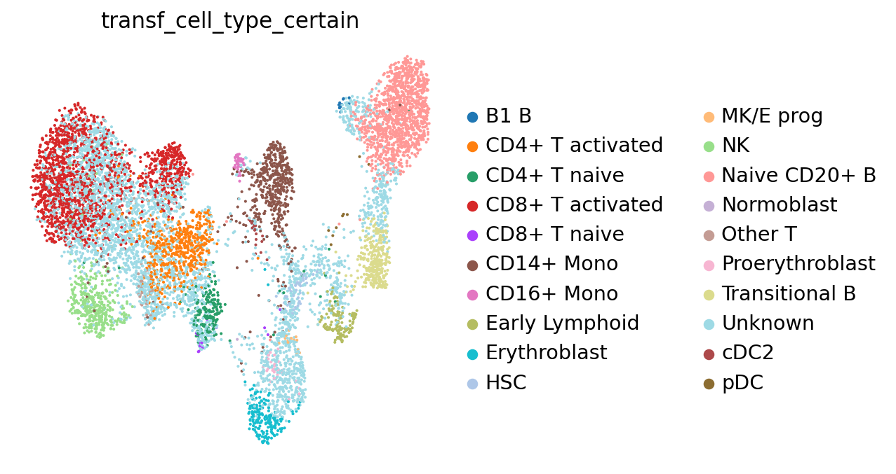
为了便于辨认，我们可以把 only “unknown（未知）”细胞单独着色。这样我们就能更容易地看出这类细胞有多少个。对其他任何细胞类型标签，你都可以做同样的处理。
sc.pl.umap(adata, color="transf_cell_type_certain", groups="Unknown")
{kind=link}
这类细胞还相当多！它们需要特别仔细的人工核查。不过，围绕这些“未知细胞”的、低不确定性的注释，已经能让我们初步判断每个细胞大概属于哪种细胞类型。
现在我们来看看那些更有把握的注释。我们会挑几种细胞类型（这里是随机选的），检查由参考转移得到的注释，与我们上面已知的标记基因吻合到什么程度。实际操作中，应该对所有注释都系统地这样做！
cell_types_to_check = [
"CD14+ Mono",
"cDC2",
"NK",
"B1 B",
"CD4+ T activated",
"T naive",
"MK/E prog",
]
方便的是，对于其中每一种细胞类型，我们的字典里都有对应的标记物。我们来为所有新注释的细胞类型绘制标记物表达图。你会注意到，标记物的表达大体上与自动注释相吻合，这是个好迹象！
sc.pl.dotplot(
adata,
var_names={
ct: marker_genes_in_data[ct] for ct in cell_types_to_check
}, # gene names grouped by cell type in a dictionary
groupby="transf_cell_type_certain",
standard_scale="var", # normalize gene scores from 0 to 1
)
{kind=link}
可以看到，各标记物组大体上在带有相应标签的细胞中表达最高。这意味着这些标签很可能（至少部分）是正确的！
我们再回到那张按不确定性着色的 UMAP：
sc.pl.umap(
adata, color=["transf_cell_type_unc", "transf_cell_type_certain"], frameon=False
)
{kind=link}
不确定性不仅能帮助我们识别出算法拿不准某个细胞属于哪种细胞类型的区域（例如，因为它落在两种已注释表型之间），还能凸显出未见过的细胞类型或新的细胞状态。例如，你的参考可能由健康细胞组成，而你的查询可能来自患病样本。这时，不确定性分数就能凸显出疾病特异的细胞状态，因为它们的邻居中可能没有始终来自同一种细胞类型的参考细胞。尤其当你的参考基于一个大型数据集时，不确定性分数对于标记出查询数据中值得深入研究的部分非常有用。基于参考的标签转移不仅能帮你注释数据，还能加速对数据的探索和解读。不过，和任何度量一样，这些不确定性分数往往并不完美，在某些情况下也会漏掉新的细胞类型或状态。关于不确定性度量更深入的讨论，可参见例如 [Engelmann et al., 2022].
与本笔记本中讨论的任何方法一样，转移得到的注释质量，取决于“训练数据”（这里就是参考）及其注释的质量、模型的质量，以及你自己的数据与训练数据的匹配程度！
因此，转移得到的注释质量，应当始终通过使用标记基因表达进行人工检查来加以验证，而且初步注释可能还需要进一步修正。
# formatting the 'names' column as string, to prevent problems with saving to h5ad format
fields = adata.uns["dea_leiden_1_filtered"]["names"].dtype.names
for field in fields:
adata.uns["dea_leiden_1_filtered"]["names"][field] = adata.uns[
"dea_leiden_1_filtered"
]["names"][field].astype(str)
af = ln.Artifact.from_anndata(
adata,
key="cellular_structure/s4d8_annotated.h5ad",
description="anndata after annotation",
).save()
af
→ creating new artifact version for key 'cellular_structure/s4d8_annotated.h5ad' in storage 's3://lamin-eu-central-1/VPwcjx3CDAa2'
... uploading 7d6LdOoS4ZSxqQPw0001.h5ad: 100.0%
Artifact(uid='7d6LdOoS4ZSxqQPw0001', key='cellular_structure/s4d8_annotated.h5ad', description='anndata after annotation', suffix='.h5ad', kind='dataset', otype='AnnData', size=394355944, hash='EmsJ3zwmGglvL6AUtu2jnV', n_files=None, n_observations=8874, branch_id=1, created_on_id=1, space_id=1, storage_id=1, run_id=56, schema_id=None, created_by_id=5, created_at=2026-03-20 19:44:42 UTC, is_locked=False, version_tag=None, is_latest=True)
13.6. 参考文献#
Tamim Abdelaal, Lieke Michielsen, Davy Cats, Dylan Hoogduin, Hailiang Mei, Marcel J. T. Reinders, and Ahmed Mahfouz. A comparison of automatic cell identification methods for single-cell rna sequencing data. Genome Biology, 20(1):194, Sep 2019. URL: https://doi.org/10.1186/s13059-019-1795-z, doi:10.1186/s13059-019-1795-z.
C. Domínguez Conde, C. Xu, L. B. Jarvis, D. B. Rainbow, S. B. Wells, T. Gomes, S. K. Howlett, O. Suchanek, K. Polanski, H. W. King, L. Mamanova, N. Huang, P. A. Szabo, L. Richardson, L. Bolt, E. S. Fasouli, K. T. Mahbubani, M. Prete, L. Tuck, N. Richoz, Z. K. Tuong, L. Campos, H. S. Mousa, E. J. Needham, S. Pritchard, T. Li, R. Elmentaite, J. Park, E. Rahmani, D. Chen, D. K. Menon, O. A. Bayraktar, L. K. James, K. B. Meyer, N. Yosef, M. R. Clatworthy, P. A. Sims, D. L. Farber, K. Saeb-Parsy, J. L. Jones, and S. A. Teichmann. Cross-tissue immune cell analysis reveals tissue-specific features in humans. Science, 376(6594):eabl5197, 2022. URL: https://www.science.org/doi/abs/10.1126/science.abl5197, arXiv:https://www.science.org/doi/pdf/10.1126/science.abl5197, doi:10.1126/science.abl5197.
Jan Engelmann, Leon Hetzel, Giovanni Palla, Lisa Sikkema, Malte Luecken, and Fabian Theis. Uncertainty quantification for atlas-level cell type transfer. 2022. URL: https://arxiv.org/abs/2211.03793, doi:10.48550/ARXIV.2211.03793.
Rui Fu, Austin E. Gillen, Ryan M. Sheridan, Chengzhe Tian, Michelle Daya, Yue Hao, Jay R. Hesselberth, and Kent A. Riemondy. Clustifyr: an r package for automated single-cell RNA sequencing cluster classification. F1000Research, 9:223, July 2020. URL: https://doi.org/10.12688/f1000research.22969.2, doi:10.12688/f1000research.22969.2.
Yuhan Hao, Stephanie Hao, Erica Andersen-Nissen, William M. Mauck, Shiwei Zheng, Andrew Butler, Maddie J. Lee, Aaron J. Wilk, Charlotte Darby, Michael Zager, Paul Hoffman, Marlon Stoeckius, Efthymia Papalexi, Eleni P. Mimitou, Jaison Jain, Avi Srivastava, Tim Stuart, Lamar M. Fleming, Bertrand Yeung, Angela J. Rogers, Juliana M. McElrath, Catherine A. Blish, Raphael Gottardo, Peter Smibert, and Rahul Satija. Integrated analysis of multimodal single-cell data. Cell, 184(13):3573–3587.e29, 2021. URL: https://www.sciencedirect.com/science/article/pii/S0092867421005833, doi:https://doi.org/10.1016/j.cell.2021.04.048.
Yixuan Huang and Peng Zhang. Evaluation of machine learning approaches for cell-type identification from single-cell transcriptomics data. Briefings in Bioinformatics, February 2021. URL: https://doi.org/10.1093/bib/bbab035, doi:10.1093/bib/bbab035.
Ignacio Isola, Fara Brasó-Maristany, David F. Moreno, Mari-Pau Mena, Aina Oliver-Calders, Laia Paré, Luis Gerardo Rodríguez-Lobato, Beatriz Martin-Antonio, María Teresa Cibeira, Joan Bladé, Laura Rosiñol, Aleix Prat, Ester Lozano, and Carlos Fernández De Larrea. Gene Expression Analysis of the Bone Marrow Microenvironment Reveals Distinct Immunotypes in Smoldering Multiple Myeloma Associated to Progression to Symptomatic Disease. Frontiers in Immunology, 12:792609, November 2021. doi:10.3389/fimmu.2021.792609.
Preetish Kadur Lakshminarasimha Murthy, Vishwaraj Sontake, Aleksandra Tata, Yoshihiko Kobayashi, Lauren Macadlo, Kenichi Okuda, Ansley S. Conchola, Satoko Nakano, Simon Gregory, Lisa A. Miller, Jason R. Spence, John F. Engelhardt, Richard C. Boucher, Jason R. Rock, Scott H. Randell, and Purushothama Rao Tata. Human distal lung maps and lineage hierarchies reveal a bipotent progenitor. Nature, 604(7904):111–119, Apr 2022. URL: https://doi.org/10.1038/s41586-022-04541-3, doi:10.1038/s41586-022-04541-3.
Joyce B. Kang, Aparna Nathan, Kathryn Weinand, Fan Zhang, Nghia Millard, Laurie Rumker, D. Branch Moody, Ilya Korsunsky, and Soumya Raychaudhuri. Efficient and precise single-cell reference atlas mapping with symphony. Nature Communications, 12(1):5890, Oct 2021. URL: https://doi.org/10.1038/s41467-021-25957-x, doi:10.1038/s41467-021-25957-x.
Romain Lopez, Jeffrey Regier, Michael B Cole, Michael I Jordan, and Nir Yosef. Deep generative modeling for single-cell transcriptomics. Nat. Methods, 15(12):1053–1058, December 2018.
Mohammad Lotfollahi, Mohsen Naghipourfar, Malte D. Luecken, Matin Khajavi, Maren Büttner, Marco Wagenstetter, Žiga Avsec, Adam Gayoso, Nir Yosef, Marta Interlandi, Sergei Rybakov, Alexander V. Misharin, and Fabian J. Theis. Mapping single-cell data to reference atlases by transfer learning. Nature Biotechnology, 40(1):121–130, Jan 2022. URL: https://doi.org/10.1038/s41587-021-01001-7, doi:10.1038/s41587-021-01001-7.
Giovanni Pasquini, Jesus Eduardo Rojo Arias, Patrick Schäfer, and Volker Busskamp. Automated methods for cell type annotation on scrna-seq data. Computational and Structural Biotechnology Journal, 19:961–969, 2021. URL: https://www.sciencedirect.com/science/article/pii/S2001037021000192, doi:https://doi.org/10.1016/j.csbj.2021.01.015.
Hannah A. Pliner, Jay Shendure, and Cole Trapnell. Supervised classification enables rapid annotation of cell atlases. Nature Methods, 16(10):983–986, Oct 2019. URL: https://doi.org/10.1038/s41592-019-0535-3, doi:10.1038/s41592-019-0535-3.
Jeffrey M. Pullin and Davis J. McCarthy. A comparison of marker gene selection methods for single-cell rna sequencing data. bioRxiv, 2022. URL: https://www.biorxiv.org/content/early/2022/05/10/2022.05.09.490241, arXiv:https://www.biorxiv.org/content/early/2022/05/10/2022.05.09.490241.full.pdf, doi:10.1101/2022.05.09.490241.
Lisa Sikkema, Ciro Ram\'ırez-Suástegui, Daniel C. Strobl, Tessa E. Gillett, Luke Zappia, Elo Madissoon, Nikolay S. Markov, Laure-Emmanuelle Zaragosi, Yuge Ji, Meshal Ansari, Marie-Jeanne Arguel, Leonie Apperloo, Martin Banchero, Christophe Bécavin, Marijn Berg, Evgeny Chichelnitskiy, Mei-i Chung, Antoine Collin, Aurore C. A. Gay, Janine Gote-Schniering, Baharak Hooshiar Kashani, Kemal Inecik, Manu Jain, Theodore S. Kapellos, Tessa M. Kole, Sylvie Leroy, Christoph H. Mayr, Amanda J. Oliver, Michael von Papen, Lance Peter, Chase J. Taylor, Thomas Walzthoeni, Chuan Xu, Linh T. Bui, Carlo De Donno, Leander Dony, Alen Faiz, Minzhe Guo, Austin J. Gutierrez, Lukas Heumos, Ni Huang, Ignacio L. Ibarra, Nathan D. Jackson, Preetish Kadur Lakshminarasimha Murthy, Mohammad Lotfollahi, Tracy Tabib, Carlos Talavera-López, Kyle J. Travaglini, Anna Wilbrey-Clark, Kaylee B. Worlock, Masahiro Yoshida, Yuexin Chen, James S. Hagood, Ahmed Agami, Peter Horvath, Joakim Lundeberg, Charles-Hugo Marquette, Gloria Pryhuber, Chistos Samakovlis, Xin Sun, Lorraine B. Ware, Kun Zhang, Maarten van den Berge, Yohan Bossé, Tushar J. Desai, Oliver Eickelberg, Naftali Kaminski, Mark A. Krasnow, Robert Lafyatis, Marko Z. Nikolic, Joseph E. Powell, Jayaraj Rajagopal, Mauricio Rojas, Orit Rozenblatt-Rosen, Max A. Seibold, Dean Sheppard, Douglas P. Shepherd, Don D. Sin, Wim Timens, Alexander M. Tsankov, Jeffrey Whitsett, Yan Xu, Nicholas E. Banovich, Pascal Barbry, Thu Elizabeth Duong, Christine S. Falk, Kerstin B. Meyer, Jonathan A. Kropski, Dana Pe'er, Herbert B. Schiller, Purushothama Rao Tata, Joachim L. Schultze, Sara A. Teichmann, Alexander V. Misharin, Martijn C. Nawijn, Malte D. Luecken, and Fabian J. Theis and. An integrated cell atlas of the lung in health and disease. Nature Medicine, June 2023. URL: https://doi.org/10.1038/s41591-023-02327-2, doi:10.1038/s41591-023-02327-2.
V. A. Traag, L. Waltman, and N. J. van Eck. From louvain to leiden: guaranteeing well-connected communities. Scientific Reports, 9(1):5233, Mar 2019. URL: https://doi.org/10.1038/s41598-019-41695-z, doi:10.1038/s41598-019-41695-z.
Allon Wagner, Aviv Regev, and Nir Yosef. Revealing the vectors of cellular identity with single-cell genomics. Nature Biotechnology, 34(11):1145–1160, Nov 2016. URL: https://doi.org/10.1038/nbt.3711, doi:10.1038/nbt.3711.
Hongkui Zeng. What is a cell type and how to define it? Cell, 185(15):2739–2755, 2022. URL: https://www.sciencedirect.com/science/article/pii/S0092867422007838, doi:https://doi.org/10.1016/j.cell.2022.06.031.
Allen W. Zhang, Ciara O'Flanagan, Elizabeth A. Chavez, Jamie L. P. Lim, Nicholas Ceglia, Andrew McPherson, Matt Wiens, Pascale Walters, Tim Chan, Brittany Hewitson, Daniel Lai, Anja Mottok, Clementine Sarkozy, Lauren Chong, Tomohiro Aoki, Xuehai Wang, Andrew P. Weng, Jessica N. McAlpine, Samuel Aparicio, Christian Steidl, Kieran R. Campbell, and Sohrab P. Shah. Probabilistic cell-type assignment of single-cell rna-seq for tumor microenvironment profiling. Nature Methods, 16(10):1007–1015, Oct 2019. URL: https://doi.org/10.1038/s41592-019-0529-1, doi:10.1038/s41592-019-0529-1.
Jesse M. Zhang, Govinda M. Kamath, and David N. Tse. Valid post-clustering differential analysis for single-cell rna-seq. Cell Systems, 9(4):383–392.e6, 2019. URL: https://www.sciencedirect.com/science/article/pii/S2405471219302698, doi:https://doi.org/10.1016/j.cels.2019.07.012.
13.7. 贡献者#
我们衷心感谢以下人员的贡献：
13.7.2. 审阅者#
Lukas Heumos